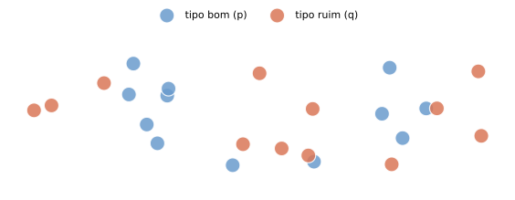
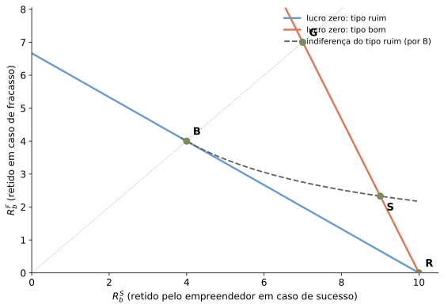

Informação Assimétrica e Estrutura de Capital — Parte 1
Felipe Iachan
Onde estamos
Aulas 11–12: Modigliani-Miller, WACC, valor com alavancagem — um mundo sem fricções
Hoje: o que muda quando levamos a sério a informação assimétrica?
Foco de hoje: seleção adversa. Risco moral fica para a Aula 14.
A pergunta
Firmas e bancos gastam horas desenhando a estrutura financeira. Isso faria algum sentido numa economia sem fricções?
O roteiro de hoje
flowchart LR
A["MM:<br/>mundo sem fricções"] --> B["Fricções:<br/>impostos, falência,<br/>informação"]
B --> C["Seleção adversa:<br/>quem consegue crédito?"]
C --> D["Pecking order:<br/>ordem de financiamento"]
D --> E["Sinalização:<br/>reter risco para separar"]
Hoje entramos em C, D e E.
De Volta à Estrutura de Capital
Firmas e agentes externos (bancos comerciais, bancos de investimento, venture capitalists) dedicam muitos recursos estudando e desenhando a estrutura financeira
Isso faz sentido em uma economia sem fricções?
Modigliani e Miller (1958, 1961): não.
Recall: hipóteses de MM
Oportunidades de investimento são fixas (fluxo de caixa independe do financiamento)
Mercados competitivos: todos são tomadores de preço, mesmos preços de mercado
Ausência de custos de transação ou impostos
Informação simétrica
Ausência de possibilidades de arbitragem
Recall: proposições de MM
O valor total de mercado de uma firma é independente da estrutura de capital
O custo do capital próprio é crescente na razão dívida/capital próprio
O valor total de uma firma independe de sua política de dividendos
Surpresas do mundo MM
Possíveis surpresas:
Decisões de financiamento são irrelevantes
Política de dividendos é irrelevante
Gerenciamento de liquidez/risco financeiro é irrelevante
Diversificação é irrelevante
Lições de MM
Valor é apenas criado pelos fluxos de caixa dos ativos (lado esquerdo do balanço patrimonial)
Se a política de investimento é independente da de financiamento, financiamento é irrelevante
O ambiente de Modigliani-Miller serve como referência de partida
Como as decisões patrimoniais podem afetar o valor total:
Impostos, custos de transação
Custos de falência
Informação assimétrica e conflitos de interesse
Primeira fricção: vantagens fiscais
Na primeira parte do curso, foram introduzidas vantagens fiscais da dívida
Estrutura de capital ótima se define em um trade-off entre vantagens fiscais e custos de falência
Trade-off: as críticas empíricas
Crítica empírica
Evidência citada
Dívida e ações existem desde antes de qualquer benefício fiscal
—
Estrutura de capital responde pouco a variações no código tributário
—
Custos de falência parecem pequenos
Warner (1976); Weiss (1990): custos diretos de 1% a 5% do valor da firma em bancarrota
…frente a ganhos fiscais grandes
Graham (2010); Kemsley e Nissim (2002): ~10% do valor da firma em média (40% do saldo da dívida)
Viés na medida de custos de falência: firmas em concordata ou liquidação já tinham baixo valor. Difícil justificar uso moderado de dívida em empresas mais sólidas.
Além dos impostos e da falência
Decisões de investimento são feitas por agentes diferentes daqueles que têm direito aos fluxos de caixa
Com informação assimétrica ou cumprimento limitado, incentivos importam: decisões de estrutura de capital podem influenciar decisões de investimento
Preocupações principais: indução de esforço e compensação ótima; monitoramento e free-riding; vantagens não-pecuniárias e construção de impérios; distorções na escolha de risco
Hoje: seleção adversa
Seleção adversa no financiamento externo — as demais distorções (esforço, risco moral) ficam para a Aula 14.
Financiamento externo com informação assimétrica
Motivação:
Agentes envolvidos no dia-a-dia de um projeto têm informação superior
Agentes externos têm dificuldade em distinguir projetos com grande potencial de projetos de menor potencial
Relutância em comprar ativos com informação inferior pode se manifestar como descontos de preço ou fechamento de mercados
Por que emitir ações, debêntures, títulos?
Com ganhos de troca:
Financiamento de investimentos iniciais, reinvestimentos, expansões
Diversificação de riscos
Liquidez: liberar recursos para outros usos de alto valor
Sem ganhos de troca:
Beneficiar-se de erros de apreçamento por agentes menos informados
Um modelo simplificado (Tirole, cap. 6)
Empreendedores e investidores neutros ao risco, sem desconto nas preferências; investidores com “deep pockets”
Empreendedor não tem recursos (\(A=0\)) para investir em um projeto que custa \(I>0\)
Empreendedor pode ser de dois tipos: alta probabilidade de sucesso (\(p\)) ou baixa (\(q<p\))
Em caso de sucesso, projeto gera \(R>0\); caso contrário, gera \(0\) (responsabilidade limitada)
Hipótese: \(pR>I\)
Informação assimétrica: tipos e fração \(\alpha\)
Empreendedor tem informação privada sobre seu tipo
Mercado competitivo de investidores conhece apenas a distribuição: fração \(\alpha\) é tipo “bom” (\(p\)), \((1-\alpha)\) é tipo “ruim” (\(q\))
Probabilidade prévia (“prior”) de sucesso de um investimento:
\[m \equiv \alpha p + (1-\alpha) q\]

Amostra ilustrativa de empreendedores (α = 0,5 aqui — genérico no .lyx-fonte)
Dois casos
Caso
Condição
Interpretação
C1
\(pR>qR>I\)
ambos investimentos são eficientes (NPV positivo)
C2
\(pR>I>qR\)
apenas o tipo “bom” é eficiente
Informação simétrica: first best
Contrato determina \(R_e^p\) e \(R_e^q\): payoffs do empreendedor em caso de sucesso
Em caso de fracasso, payoff é zero (não se pode exigir pagamento na direção contrária)
Investidor recebe, em caso de sucesso, \(R-R_e^i\) para \(i=p,q\)
Competição garante lucro zero para os investidores
Usando (1) e \(m=p-(1-\alpha)(p-q)\), reescrevemos essa utilidade a seguir.
Decompondo o valor: info. simétrica menos desconto
\[pR_{e}^{S}+\left(1-p\right)R_{e}^{F}=\underbrace{\left[pR^{S}+\left(1-p\right)R^{F}-I\right]}_{\text{valor sob info. simétrica}}-\underbrace{(1-\alpha)(p-q)\left[\left(R^{S}-R_{e}^{S}\right)-\left(R^{F}-R_{e}^{F}\right)\right]}_{\text{desconto de seleção adversa}}\]
Note que o desconto decresce com \(R_e^S\) e cresce com \(R_e^F\)
Por que a dívida vem primeiro
Condicional à participação de investidores desinformados, o agente de tipo “bom” sempre prefere:
\(R_e^F=0\): minimiza o desconto — emissão máxima da dívida livre de risco (ativo menos sensível à informação)
\(R_e^S\) o máximo possível, desde que ainda suficiente para garantir o investimento
Essa é a lógica por trás da pecking order.
Aplicação 2: sinalização e diversificação
Em ambientes de seleção adversa, sinais podem ser usados para gerar separação e ganhos para os agentes que gostariam de se diferenciar
Exemplos: garantia para automóveis usados; educação no modelo de Spence
Que propriedade esses sinais necessitam para poder gerar separação?
Sinalização em Finanças Corporativas
Certificação (não atende à propriedade usual; depende da informação se tornar verificável)
Empréstimos garantidos (garantia/colateral é menos custosa para o tipo bom, que a perde com menor probabilidade)
Nível menor de diversificação (Leland-Pyle) — próximo exemplo
Sinalização e diversificação: Leland-Pyle
Tirole, p. 260
Como o modelo anterior, porém com empreendedores avessos ao risco: \(U\left(R_i^j\right)\) côncava (\(j\) para estado, \(i\) para indivíduo)
Investimento tido como feito inicialmente
Paga \(R>0\) em caso de sucesso e \(0\) em caso de fracasso
Empreendedores querem vender promessas de pagamento para minimizar sua exposição ao risco
em que \(R_{e,q}\equiv qR\) (já impõe seguro perfeito para o tipo baixo).
Gráfico: equilíbrio separador (Leland-Pyle)

Equilíbrio separador, redesenhado de Tirole (2006, p. 261). Parâmetros ILUSTRATIVOS: p=0,7; q=0,4; R=10; U(x)=ln(x).
\(B\): seguro pleno do tipo ruim. \(G\): seguro pleno hipotético do tipo bom (inatingível). \(S\): contrato separador do tipo bom. \(R\): retenção total do risco.
Lições
Seguro perfeito para o tipo baixo, que se desfaz da quantidade ótima de ativos
Seguro parcial para o tipo alto, para possibilitar screening
Tipo “bom” está mais disposto a manter parte do risco, pois é relativamente menos custoso — a probabilidade de sucesso é superior
O que aprendemos hoje
Seleção adversa gera desconto de preço, restrição de crédito ou sobreinvestimento — depende de qual caso (C1/C2) e de \(\alpha\) vs. \(\alpha^*\)
Pecking order: dívida antes de ações, porque é a fonte menos sensível à informação privada
Sinalização (Leland-Pyle): reter risco é mais caro para o tipo ruim — permite separação
Próxima aula: risco moral — quando o problema não é o que o agente sabe, mas o que ele faz